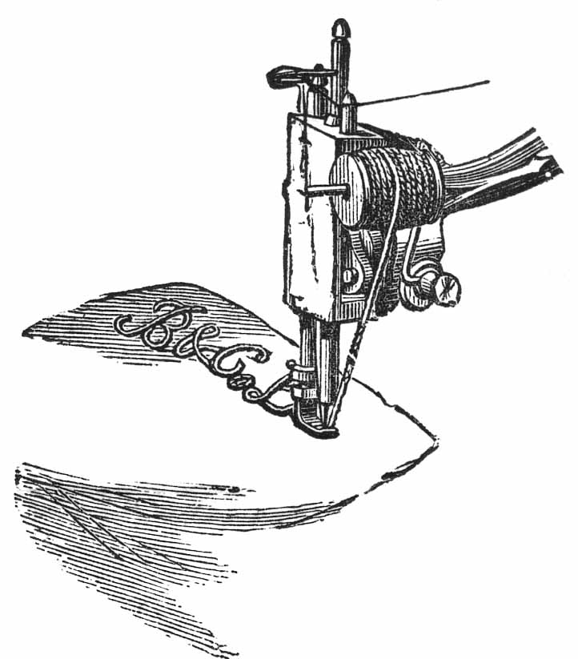
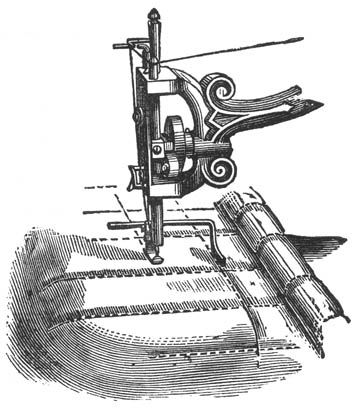

DIRECTIONS
FOR OPERATING
BRADBURY & CO.'S
Shuttle Sewing Machine
HOW TO BRAID

With the braid upon an ordinary reel, straight and even, without twisting; insert the braiding arm through the small hole attached to presser bar; place the reel upon it; pass the end of the braid under the wire bar and through the hole in the presser foot. When sewing, the needle will pass through the centre of the braid; stamp or trace the work to be braided to any design; turn the work as may be necessary to follow the lines (however elaborate) upon shawls, mantles, jackets, slippers, smoking caps, &c., &c.

Insert the quilting gauge through the small hole attached to the presser bar, as per drawing; adjust it to any distance from the needle as may be desired between the lines of sewing. To form the squares or diamonds you commence by creasing the material a short distance from the corner; follow the crease for the first line of sewing, then the guide on the different lines afterwards. Commence the cross lines of stitching to form the squares or diamonds as at the commencement, by a crease.
TO REMOVE THE WORK
Allow the needle to rest at its highest point, press down the needle thread between the tension discs and the thread guide, until you have about three inches of slack thread, and with the left hand draw the fabric towards the back about three inches, then cut both the threads near the fabric sewn, and not close to the needle.